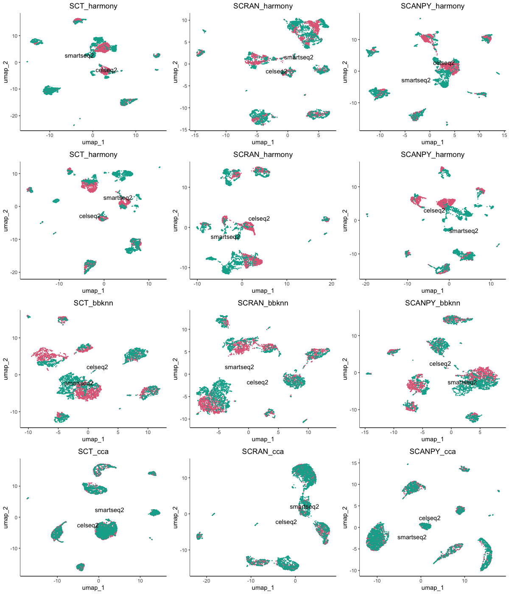

Data Integration
Connor H Knight
11/08/2021
integration.RmdIntegrating Multiple Datasets
Most analyses require more than a single sample. Especially, in meta-analyses.
You can download the data for this tutorial using the following links:
https://www.dropbox.com/s/eckh3b6i12351mr/smartseq2.rds?dl=0 https://www.dropbox.com/s/iyzrrqbx086fhl6/celseq2.rds?dl=0
Creating IBRAP objects
celseq2_items <- readRDS(file.choose())
smartseq2_items <- readRDS(file.choose())
celseq2 <- createIBRAPobject(counts = celseq2,
meta.data = metadata_celseq2,
original.project = 'celseq2',
method.name = 'RAW',
min.cells = 3,
min.features = 200)
smartseq2 <- createIBRAPobject(counts = smartseq2,
meta.data = metadata_smartseq2,
original.project = 'smartseq2',
method.name = 'RAW',
min.cells = 3,
min.features = 200)
Merging IBRAP objects
Datasets are then merged together. WARNING: Datasets can only be merged straight after their cvreation with no downstream results.
pancreas <- merge(x = celseq2, y = smartseq2)
Pre-processing & Batch Visualisation
We then continue our analysis as normal:
pancreas <- perform.sct(object = pancreas,
assay = 'RAW',
slot = 'counts')
pancreas <- perform.scran(object = pancreas,
assay = 'RAW',
slot = 'counts',
vars.to.regress = 'RAW_total.counts', do.scale = T)
pancreas <- perform.scanpy(object = pancreas,
vars.to.regress = 'RAW_total.counts', do.scale = T)
pancreas <- perform.pca(object = pancreas,
assay = c('SCT', 'SCRAN', 'SCANPY'),
n.pcs = 50, reduction.save = 'pca')
pancreas <- perform.umap(object = pancreas,
assay = c('SCT', 'SCRAN', 'SCANPY'),
reduction = c('pca'),
n_components = 2,
n.dims = list(1:10))
plot1 <- plot.reduced.dim(object = pancreas, reduction = 'pca_umap', assay = 'SCT',
clust.method = 'metadata', column = 'original.project', pt.size = 0.1) +
ggplot2::ggtitle('SCT') +
ggplot2::theme(plot.title = ggplot2::element_text(hjust = 0.5))
plot2 <- plot.reduced.dim(object = pancreas, reduction = 'pca_umap', assay = 'SCRAN',
clust.method = 'metadata', column = 'original.project', pt.size = 0.1) +
ggplot2::ggtitle('SCRAN') +
ggplot2::theme(plot.title = ggplot2::element_text(hjust = 0.5))
plot3 <- plot.reduced.dim(object = pancreas, reduction = 'pca_umap', assay = 'SCANPY',
clust.method = 'metadata', column = 'original.project', pt.size = 0.1) +
ggplot2::ggtitle('SCANPY') +
ggplot2::theme(plot.title = ggplot2::element_text(hjust = 0.5))
plot1 + plot2 + plot3

As we can see there are profound differences between the samples due to technical variation. This requires correction.
Integration Techniques
We have included 3 integration techniques. However, there are a few differences between them: - bbknn & harmony both funciton on the reduced embeddings of the samples, i.e. PCA reduction - harmony is much more customisable with numerous adjustable parameters - bbknn is much more straight forward with less adjustable parameters - scanorama functions on transformed + scaled + HVG subset matrices, i.e. norm.scaled - scanorama is more automated aswell as bbknn - harmony and scanorama both produce reduced embeddings which are stored in the integration_reduction slots - bbknn produces a k-nearest neighbour corrected graph which constrains its useability to functions that accept graphs. - since bbknn is already preducing the k-nearest neighbour graphs, it can also produce a batch corected diffusion map.
Lets begin the integration techniques
Integration Application $ Visualisaiton
pancreas <- perform.bbknn(object = pancreas,
assay = c('SCT', 'SCANPY', 'SCRAN'),
reduction = c('pca'),
batch = 'tech')
pancreas <- perform.harmony(object = pancreas,
assay = c('SCRAN', 'SCT', 'SCANPY'),
vars.use = 'original.project',
reduction = c('pca'),
max.iter.harmony = 100,
dims.use = list(NULL))
pancreas <- perform.scanorama(object = pancreas,
assay = c('SCT', 'SCRAN', 'SCANPY'),
slot = 'norm.scaled',
split.by = 'original.project',
n.dims = 50)
pancreas <- perform.umap(object = pancreas,
assay = c('SCT', 'SCRAN', 'SCANPY'),
reduction = c('pca_harmony', 'scanorama'),
n_components = 2,
n.dims = list(1:50, 1:50))
pancreas <- perform.umap(object = pancreas, assay = c('SCT', 'SCRAN', 'SCANPY'), graph = 'pca_bbknn_bbknn')
plot.list <- list()
plot.list[[1]] <- plot.reduced.dim(object = pancreas, reduction = 'pca_harmony_umap', assay = 'SCT',
clust.method = 'metadata', column = 'original.project', pt.size = 0.1) +
ggplot2::ggtitle('SCT_harmony') +
ggplot2::theme(plot.title = ggplot2::element_text(hjust = 0.5))
plot.list[[2]] <- plot.reduced.dim(object = pancreas, reduction = 'pca_harmony_umap', assay = 'SCRAN',
clust.method = 'metadata', column = 'original.project', pt.size = 0.1) +
ggplot2::ggtitle('SCRAN_harmony') +
ggplot2::theme(plot.title = ggplot2::element_text(hjust = 0.5))
plot.list[[3]] <- plot.reduced.dim(object = pancreas, reduction = 'pca_harmony_umap', assay = 'SCANPY',
clust.method = 'metadata', column = 'original.project', pt.size = 0.1) +
ggplot2::ggtitle('SCANPY_harmony') +
ggplot2::theme(plot.title = ggplot2::element_text(hjust = 0.5))
plot.list[[4]] <- plot.reduced.dim(object = pancreas, reduction = 'scanorama_umap', assay = 'SCT',
clust.method = 'metadata', column = 'original.project', pt.size = 0.1) +
ggplot2::ggtitle('SCT_harmony') +
ggplot2::theme(plot.title = ggplot2::element_text(hjust = 0.5))
plot.list[[5]] <- plot.reduced.dim(object = pancreas, reduction = 'scanorama_umap', assay = 'SCRAN',
clust.method = 'metadata', column = 'original.project', pt.size = 0.1) +
ggplot2::ggtitle('SCRAN_harmony') +
ggplot2::theme(plot.title = ggplot2::element_text(hjust = 0.5))
plot.list[[6]] <- plot.reduced.dim(object = pancreas, reduction = 'scanorama_umap', assay = 'SCANPY',
clust.method = 'metadata', column = 'original.project', pt.size = 0.1) +
ggplot2::ggtitle('SCANPY_harmony') +
ggplot2::theme(plot.title = ggplot2::element_text(hjust = 0.5))
plot.list[[7]] <- plot.reduced.dim(object = pancreas, reduction = 'pca_bbknn_bbknn:umap', assay = 'SCT',
clust.method = 'metadata', column = 'original.project', pt.size = 0.1) +
ggplot2::ggtitle('SCT_bbknn') +
ggplot2::theme(plot.title = ggplot2::element_text(hjust = 0.5))
plot.list[[8]] <- plot.reduced.dim(object = pancreas, reduction = 'pca_bbknn_bbknn:umap', assay = 'SCRAN',
clust.method = 'metadata', column = 'original.project', pt.size = 0.1) +
ggplot2::ggtitle('SCRAN_bbknn') +
ggplot2::theme(plot.title = ggplot2::element_text(hjust = 0.5))
plot.list[[9]] <- plot.reduced.dim(object = pancreas, reduction = 'pca_bbknn_bbknn:umap', assay = 'SCANPY',
clust.method = 'metadata', column = 'original.project', pt.size = 0.1) +
ggplot2::ggtitle('SCANPY_bbknn') +
ggplot2::theme(plot.title = ggplot2::element_text(hjust = 0.5))
egg::ggarrange(plots = plot.list, nrow = 3, ncol = 3)

Benchmarking Integration
Alternatively to just visualising the data we can also apply Average Silhouette Width to quantativiely assess the closeness of the batches in comparison to the uncorrected version.
previously we calcualted the UMAP reductions for the uncorrected PCA and the corrected: harmony, bbknn, and scanorama data. We can use the UMAP reductions to assess the effectiveness of the data using this function:
pancreas <- benchmark.intergation(object = pancreas,
batch = 'original.project', assays = c('SCT','SCRAN','SCANPY'),
reduction = c('pca_umap', 'pca_harmony_umap',
'scanorama_umap', 'pca_bbknn_bbknn:umap'),
result.names = c('uncorrected', 'harmony', 'scanorama', 'bbknn'),
n.components = 2)
We can plot the results using an IBRAP plotting function: